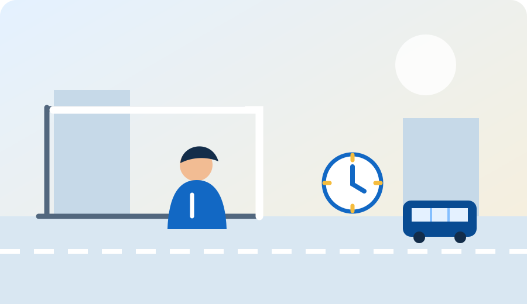
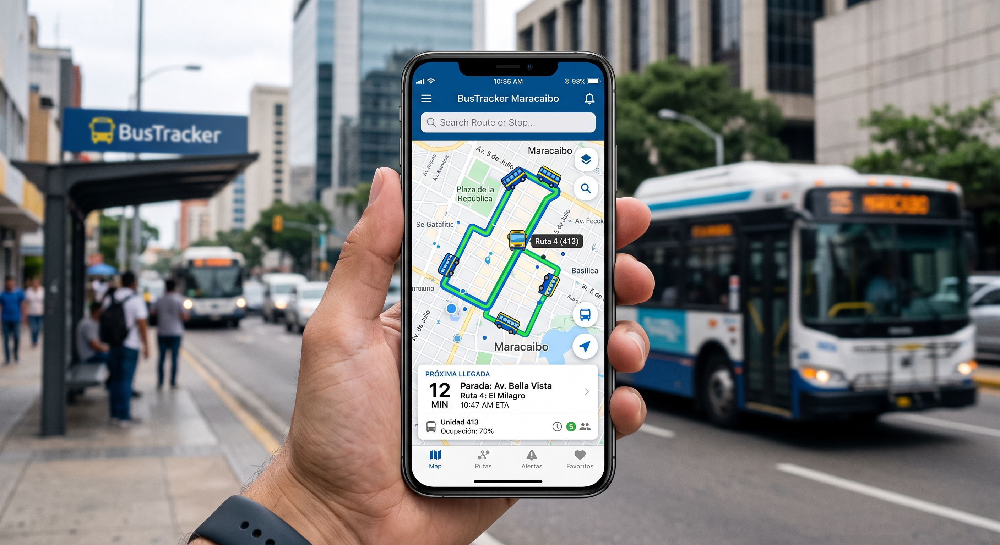
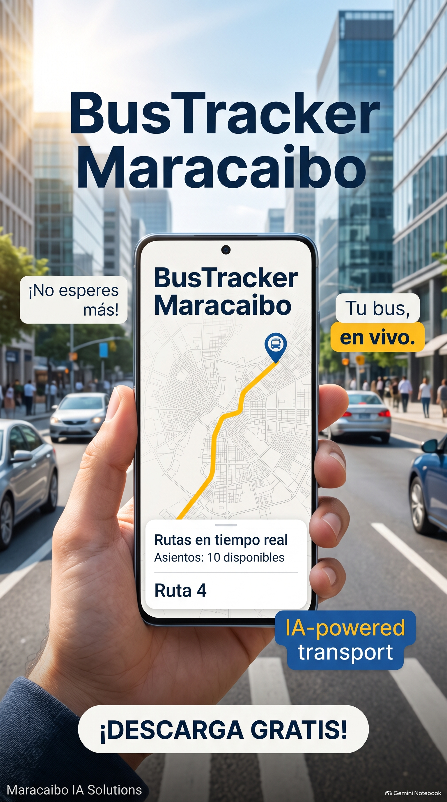
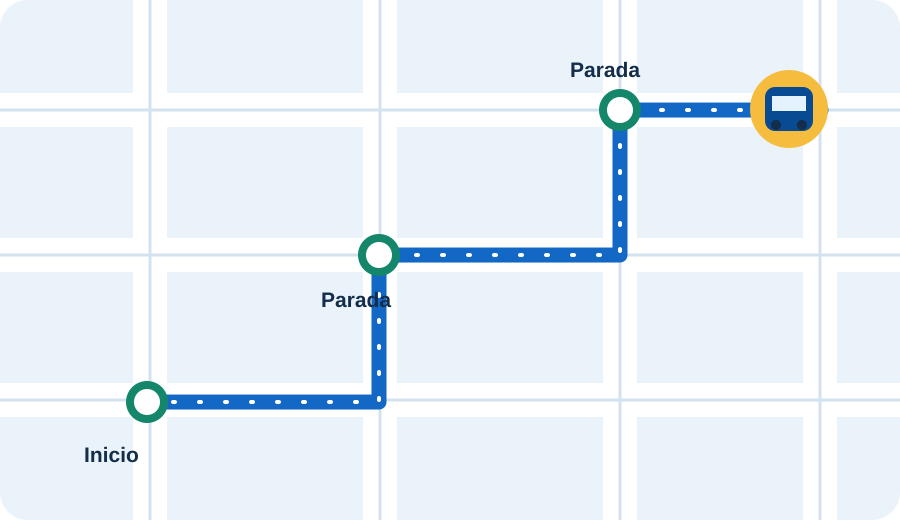
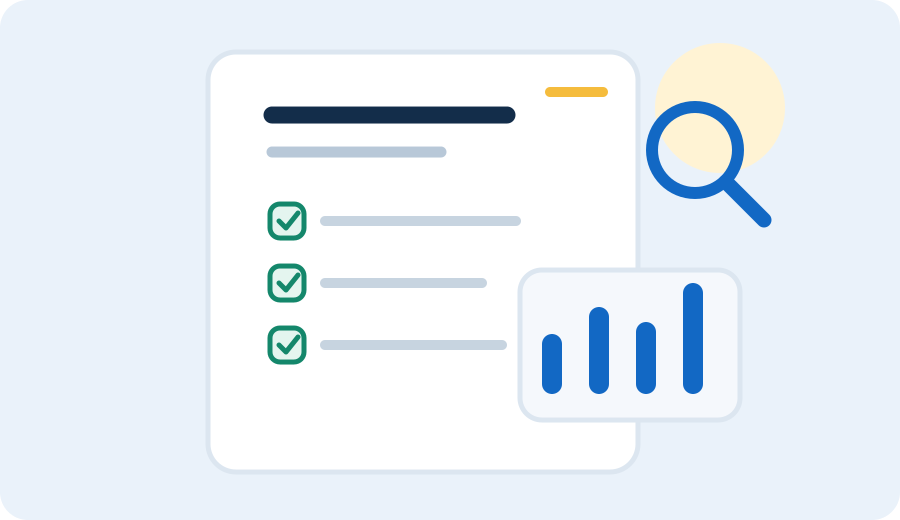

01El reto de movilidad
El problema
Por qué esperar sin saber cuándo llega la unidad afecta la vida diaria.
Ver el problemaUna propuesta de movilidad para Maracaibo
BusTracker Maracaibo es una propuesta de aplicación móvil que usa inteligencia artificial para ayudar a consultar y gestionar buses, carros por puesto y mototaxis en Maracaibo, Zulia.

Una idea en imágenes
Estas imágenes ilustran la propuesta de BusTracker; no muestran rutas, horarios ni vehículos conectados en tiempo real.



Explora el proyecto
Conoce cada parte de la propuesta con una vista rápida de sus temas principales. Las imágenes son ilustrativas y no representan un servicio activo.

01El reto de movilidad
Por qué esperar sin saber cuándo llega la unidad afecta la vida diaria.
Ver el problemaLa propuesta
Cómo la información de rutas y unidades puede orientar el viaje.
Conocer la propuestaHerramientas para el viaje
Mapa, llegadas estimadas, horarios, avisos y más.
Ver las funciones04Tecnología explicada
Las técnicas de IA y la arquitectura, explicadas en términos sencillos.
Entender la tecnologíaMaracaibo IA Solutions
Conoce a los estudiantes de Ingeniería en Sistemas detrás del proyecto.
Conocer al equipo
06Hallazgos y próximos pasos
Qué se validó, cuáles son las limitaciones y qué sigue.
Ver resultadosTecnología para una necesidad cotidiana
La propuesta conecta datos de ubicación, rutas y patrones anteriores para dar una referencia útil a pasajeros y gestores del transporte.
El proyecto fue desarrollado por Maracaibo IA Solutions como trabajo de Ingeniería en Sistemas de la Universidad Dr. José Gregorio Hernández. Se enfoca en el transporte público local y en el potencial de la inteligencia artificial en entornos con poca infraestructura tecnológica.
Este sitio presenta el proyecto académico. No está conectado a GPS de buses y no ofrece descarga de una aplicación operativa. La precisión del GPS y la conexión a internet son limitaciones reconocidas por el proyecto.
Leer límites y próximos pasos